Mesh Options dialog box
The Mesh Options dialog box contains options for improving the mesh results using the Mesh command or the mesh sizing commands. Selected options are applied and saved with the study when you select the Mesh button or the Mesh & Solve button in the Mesh dialog box.
Body Mesh options
Body Mesh options are available only when the Body Mesh check box is selected.
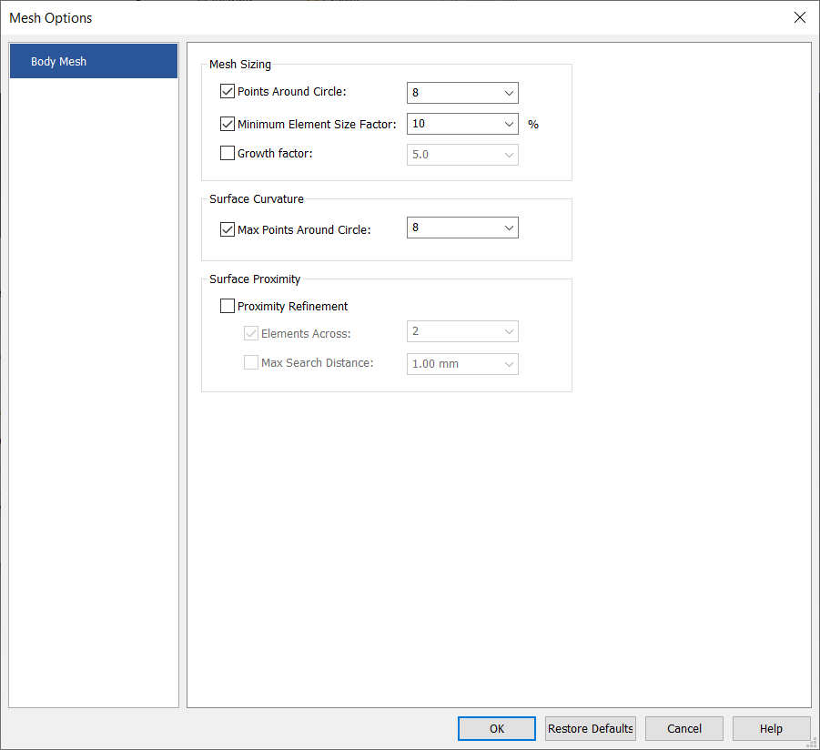
- Mesh Sizing
-
These options described next control the size of the elements being created.
- Points Around Circle
-
Specifies the number of triangles (edges/faces) used to define a 360 degree cylindrical surface. Any other types of cylindrical surfaces use an equivalent number of triangles. For example, a half circle uses half of this value and an ellipse would use more faces on tighter curvature.
The valid range of values is 3 to 128.
- Minimum Element Size Factor
-
When any setting causes mesh refinement to occur, the element face edges do not go below the specified value.
The valid range of values is 1 to 100.
- Growth Factor
-
This control determines the maximum rate at which face edge sizes vary from one face to another (or to an adjacent face). The effect is only seen when there is transition from an area of refinement to the rest of the surface mesh. For example, the default value of 50% means that a face edge can be 1.5 times the length of an adjacent face when growing from a short to a long edge length. The recommended range for Growth Factor is from 10% to 60%.
The valid range of values is 1.00e-08 to 1.00e+02.
- Surface Curvature
-
- Max Points Around Circle
-
Specifies the maximum number of points around a complete circle.
The valid range of values is 4 to 128.
- Surface Proximity
-
- Proximity Refinement
-
When Proximity Refinement is activated, the Elements Across option determines the local face size by dividing the distance from one face to another across a gap by this value. It is used in conjunction with the Max Search Distance value, which specifies a Search Ceiling.
The valid range of values for Elements Across is 2 to 10.
Max Search Distance specifies the maximum distance that the mesher includes in surface proximity, which prevents unwanted refinement. This property is useful if a component has a variable thickness and you need an option to locally refine only those areas where the thickness is less than a specified value. However, if the gap distance is more than this value, there is no refinement.
The valid range of values for Max Search Distance is 1.00e-12 to 1.00e+05 in mm units.
Mesh Sizing options
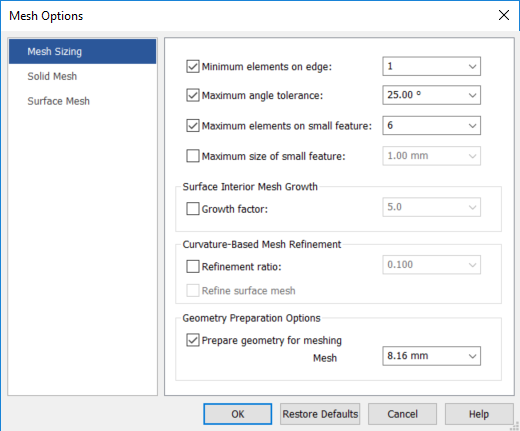
- Minimum elements on edge
-
Specifies the minimum number of elements along any edge on the selected surfaces.
The default value is 1, and the number of elements are determined by the element size. Use this option to set higher numbers if you want to force some degree of refinement.
The valid range of values is 1 to 9.99e+08.
- Maximum angle tolerance
-
Specifies the maximum allowable angle between the tangent of a surface boundary curve at the start of the element edge, and the angle of the free edge of the element (1).
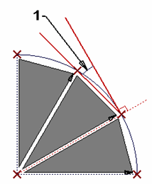
The valid range of values is 5.73e-07 to 5.73e+03.
- Maximum elements on small feature
-
Limits the number of elements placed around the perimeter of an interior boundary, usually around small features, to the value you enter in the Maximum elements on small features box. This prevents a large concentration of elements along small features that may not be needed and can skew the results for your model.
When this option is set, you can enter a value from 3 to 9.99e+08.
- Maximum size of small feature
-
Overrides the element size and directly specifies the size of a small feature. This value is the effective diameter of the interior feature calculated by taking the perimeter length of the interior feature divided by Pi.
The valid range of values for Max Search Distance is 1.00e-12 to 1.00e+05 in mm units.
- Surface Interior Mesh Growth
-
- Growth factor
-
Target size of all of the elements in the interior of the surface. It is multiplied by the average size of the elements around the perimeter of the surface.
Growth factor affects mesh quality.
Example:If you want to decrease the size of the elements in the interior of the surface, use a number between 0 and 1; to increase the size, use a value above 1.
The valid range of values is 1.00e-08 to 1.00e+02.
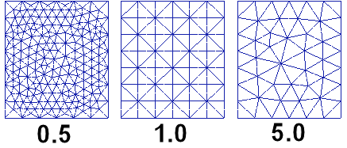
- Curvature-Based Mesh Refinement
-
The Curvature-Based Mesh Refinement options work together to reduce the size of elements in areas of a surface with a high amount of curvature.
In this process, the surface is meshed first at the initial element size. Then the ratio of Chord Height to Chord Length is calculated for each element. If this ratio is larger than the value specified, the element size is automatically reduced and the surface is meshed again with the new sizing. This continues until all the elements on that surface do not exceed the Refinement ratio.
- Refinement ratio
-
Refinement Ratio≡Chord Height÷Chord Length
Where Chord Height (1) is the maximum normal distance from the element edge to the curve or surface, and Chord Length (2) is the length of the element edge.
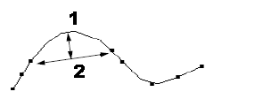
The valid range of values is 1.00e-08 to 1.00e+02.
- Refine surface mesh
-
Refines the surface mesh using the Refinement ratio.
- Geometry Preparation Options
-
Use the following options to eliminate unnecessary geometry features, such as small surfaces and short edges. This is based on the global mesh size and active geometries, so that the meshing process is more robust and generates better quality elements.
- Prepare geometry for meshing
-
Specifies that an advanced algorithm is applied to simplify the geometry before mesh processing. Use this option when a model contains very small faces or edges that can cause meshing to fail.
This option is off by default in a new study. If mesh and solve fails, then you can turn this option on to apply the advanced mesh algorithm, and then try meshing again.
- Mesh size
-
Specifies a user-defined value so that the geometry that is required for meshing is extracted, and the small facets and slivers below this value are ignored. You can try different values and remesh the model to achieve a successful mesh.
Example:Before—Sliver geometry is visible.

After—Geometry is simplified.
 Note:
Note:You also can use the Geometry Inspector to aid in cleaning up complex geometry. For more information, see Removing geometry flaws and small entities.
Solid Mesh options
- Midside nodes on surfaces
-
Creates the parabolic surface elements instead of linear surface elements on the individual faces of the tetrahedral element. Midside node are created only when the Mid side nodes check box in the Body Size dialog box is selected.
It also controls the projection of midside nodes of parabolic surface elements onto the edges and surfaces of your solid model, or simply created at the geometric center of the two adjacent corners of the tetrahedral element. This option is an additional setting for the Mid side nodes option available in the Body Size dialog box.
The following example demonstrates the effect of the Mid side nodes and Mid side nodes on surfaces options on the cylinder model.
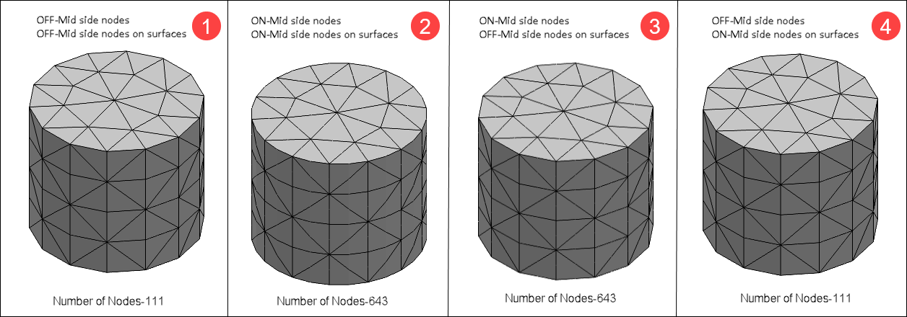
Midside nodes are projected onto the surfaces and edge curves. Notice the accurate representation of the cylindrical portion of this model (2), since the midside nodes are on the radius of the cylinder. Without midside node projection, the cylindrical portion is more faceted (3).
Note:You must always select the Mid side nodes check box in the Body Size dialog box.
- Limit midside distortion angle
-
Limits the distortion of parabolic elements created by the Midside nodes on surfaces option.
- Maximum angle
-
Specifies the maximum angle of distortion of the parabolic elements.
If the limit distortion option is on, you must specify an angular limit to the distortion. Femap will calculate the position of the midside node on the surface, and then compare the resulting angles with the two corner nodes. If either of these angles is above the specified limit, Femap will recompute a new position for the node on the line between the exact midside position and the position on the surface, which creates an angle equal to the limit angle.
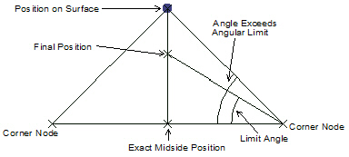
The valid range of values is 0.00 to 5.16e+03.
Surface Mesh options
- Allow mapped meshing
-
When checked, creates a mapped mesh with regular, structured elements. A mapped mesh uses the values set for Maximum angle tolerance and Minimum elements on edge to determine corners it can use to create surface elements.
When unchecked, the selected surface or surfaces mesh with a free mesh, which consists of elements with random, irregular shapes.
- Other Meshing Options
-
- Post-meshing cleanup
-
Checked by default, attempts to eliminate specific patterns in a mesh in an effort to create an overall higher quality mesh. It also does additional element checking in an attempt to eliminate meshing situations which may cause problems with surface and solid meshing.
Note:In almost all cases, the Post-meshing cleanup option should be selected, as it usually creates a better overall mesh. The only potential drawback to using this option is the possibility that the cleanup will replace patterns with fewer elements, and therefore create a slightly coarser mesh than expected.
Additional cleanup includes inserting extra mesh points on long cylindrical surfaces with coarse mesh sizing. This eliminates the possibility of elements bridging the gap, resulting in a collapsed hole.
The following example shows mesh patterns and the resulting mesh after using Post-meshing cleanup. In 1, before and after states are presented for patterns; in 2, unwanted diamond-shaped elements are eliminated.
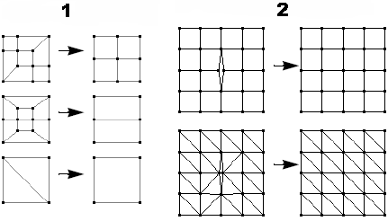
- Maximize quad elements
-
For surface meshes, maximizes the number of quadrilateral elements, and minimizes the number of triangular elements. Quadrilateral mesh elements produce more accurate solutions.
Femap Example
Off
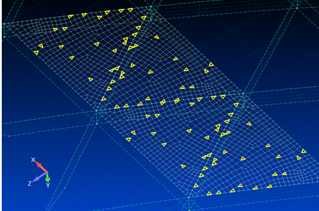
On
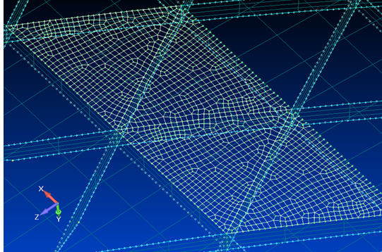
- Quad edge layers
-
Specifies the number of layers of quadrilateral elements placed around every boundary curve on a surface. You can choose to have either 1, 2, or 3 layers of quads around each boundary curve of a surface, including internal curves.
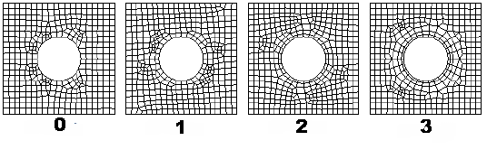
The valid range of values is 0 to 25.
Note:If you enter a number higher than 3 directly into the box, the mesher attempts to create the specified number of quad element layers. If there is not enough room for the requested number of layers based on the mesh size, as many layers as possible are created.
- Smoothing
-
Adjusts the locations of element corner nodes to reduce distortions in those elements. Smoothing is performed automatically by all free-meshing options described above, but you also can use it to smooth any planar or solid element mesh manually.
- Laplacian
-
Pulls a node toward the center of surrounding nodes directly connected to that node along an element edge.
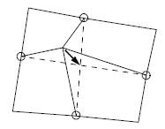
- Centroidal
-
Pulls a node toward the element-area-weighted centroid of the surrounding elements.
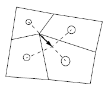
Note:The Laplacian method usually produces the mesh with the least element distortion. It is also the faster method. Centroidal smoothing usually produces a mesh that has more uniform element sizes.
- Max iterations
-
For either of the two smoothing methods–Laplacian or Centroidal—specifies the maximum number of iterations used to converge toward a smoother mesh. At the conclusion of each iteration, the smoothing is reevaluated with the updated nodal locations. This process continues until the maximum number of iterations is exceeded, or until no node is moved by a greater distance than the tolerance value entered in the Smooth to box.
The valid range of values is 0 to 1000.
- Smooth to
-
Specifies a maximum distance that an individual node can be moved during smoothing iterations.
The valid range of values is 0 to 1.00e+05 in mm units.
How do I
Mesh the modelActivity: Use subjective mesh sizing
Activity: Apply a surface mesh to a sheet metal part
Activity: Size the mesh on an edge
Activity: Size the mesh on a surface
Learn more
MeshesMesh sizing
Examining the mesh
Identifying areas of poor mesh quality
Look up more details
Mesh dialog boxBody Size dialog box
Edge Size dialog box
Surface Size dialog box
Check Element Quality